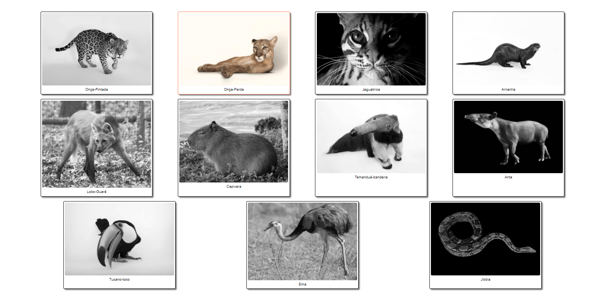

PantanalDex

The Brazilian wetlands are called Pantanal and they are home to a vast amount of animals.
With more than 20% of it's area burned in 2020, I have created this landing page and the actual pantanalDex app to raise awareness about the fauna living there.